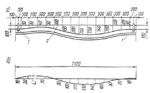
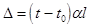
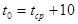
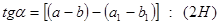
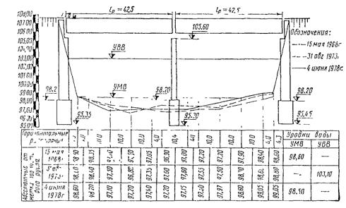
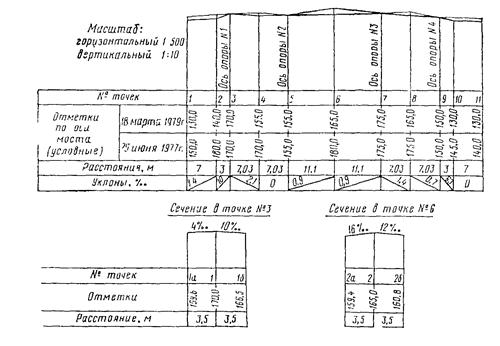

МИНИСТЕРСТВО АВТОМОБИЛЬНЫХ ДОРОГ РСФСР
ИНСТРУКЦИЯ
ПО ПРОВЕДЕНИЮ ОСМОТРОВ МОСТОВ И ТРУБ
НА АВТОМОБИЛЬНЫХ ДОРОГАХ
ВСН 4-81
Москва 1990
Инструкция разработана в развитие Технических правил ремонта и содержания автомобильных дорог (ВСН 24-75). В ней изложены порядок и правила проведения работ по текущим, периодическим и специальным осмотрам мостов и труб, эксплуатируемых на автомобильных дорогах; дана методика осмотра сооружений.
Предназначена для инженерно-технических работников, связанных с эксплуатацией мостов и труб.
Ил. 6.
Инструкция составлена в Государственном дорожном проектно-изыскательском и научно-исследовательском институте (Гирпродорнии) Минавтодора РСФСР канд. техн. наук. С.А. Мусатовым.
Требования к оценке безопасности движения сооружений заменены ОДН 218.017-2003, утвержденных распоряжением Минтранса России № ОС-198-р от 26.03.2003 г.
|
Министерство |
Ведомственные
|
ВСН 4-81 |
|
Инструкция
по проведению |
1. ОБЩИЕ ПОЛОЖЕНИЯ
1.1. Настоящая инструкция содержит правила и порядок проведения работ по осмотрам мостов (в том числе путепроводов, эстакад, виадуков) и водопропускных труб на автомобильных дорогах.
1.2. На всех мостах и трубах необходимо регулярно проводить осмотры текущие, периодические и специальные.
Осмотры мостов и труб осуществляются техническим персоналом дорожных эксплуатационных хозяйств, а в необходимых случаях также мостоиспытательными и другими специализированными организациями.
1.3. Цель текущих и периодических осмотров: наблюдение за общим состоянием мостов и труб с выявлением дефектов, требующих устранения; определение объемов ремонтных работ; контроль выполненных работ по содержанию и ремонту, установление порядка дальнейшего надзора за сооружением.
1.4. Текущие осмотры мостов и труб проводят мостовые (дорожные) мастера дорожных подразделений (ДРСУ и т.д.) на вверенном им участке дороги в сроки, установленные «Техническими правилами ремонта и содержания автомобильных дорог» (ВСН 24-88), а именно:
деревянные мосты, наплавные мосты - не реже одного раза в квартал;
металлические, железобетонные, бетонные и каменные мосты и трубы - не реже одного раза в полугодие;
цельносварные, клепаносварные, а также усиленные сваркой стальные и сталежелезобетонные пролетные строения - в зимний период не реже одного раза в месяц, а при температуре воздуха ниже - 20° С - ежедневно.
Мосты и трубы с дефектами, влияющими на грузоподъемность сооружения, а также ветхие и слабые сооружения в зависимости от состояния необходимо осматривать чаще.
Текущие осмотры рекомендуется проводить после прохода паводковых вод и ледохода, а также осенью (перед началом ледостава); малые сооружения, кроме того, - после сильных ливневых дождей, когда наблюдается подъем уровней рек.
Текущие осмотры должны быть проведены после землетрясений силой более 5 баллов”.
(Измененная редакция. Изм. № 1)
1.5. Периодические осмотры производит начальник (заместитель начальника) или главный инженер дорожного подразделения совместно с мостовым (дорожным) мастером после прохода паводковых вод, а также после выполнения значительных по объему ремонтных работ.
1.6. Все мосты и трубы должны быть подвергнуты специальным осмотрам с привлечением мостостроительных организаций или специальных комиссий, организуемых при дорожных управлениях (автодорах, управлениях дорог).
|
Внесена
|
Утверждена
|
Срок введения 1982 г. |
Цель специальных осмотров (обследований) мостов:
определение технического состояния сооружения с выявлением дефектов, снижающих грузоподъемность, долговечность и безопасность движения;
проверка качества содержания сооружения; проверка наличия и качества ведения технической документации (в том числе карточек на мост, книг искусственного сооружения и пр.);
разработка предложений по устранению повреждений;
определение грузоподъемности и назначение режима эксплуатации сооружений (перечень оборудования см. в прил. 3).
1.7. Специальные осмотры сооружений следует проводить в плановом порядке в следующие сроки:
деревянные мосты - периодически 1 раз в 5 лет;
металлические, железобетонные, бетонные и каменные мосты и трубы - 1 раз в 10 лет;
после восстановления, усиления и реконструкции;
при организации пропуска сверхнормативных нагрузок и после их прохода. Если при текущем или периодическом осмотре на сооружении обнаружены дефекты, снижающие его грузоподъемность, то такой мост или труба должны быть осмотрены в первую очередь.
(Измененная редакция. Изм. № 1)
1.8. При специальных осмотрах мосты длиной более 100 м должны обследовать и испытывать мостоиспытательные станции треста «НПО РосдорНИИ» Минавтодора РСФСР, а также научно-исследовательских, проектных и учебных институтов, имеющих соответствующий опыт работ и необходимое оборудование.
Специальные осмотры деревянных простых балочных мостов, а также всех мостов длиной до 100 м и водопропускных труб могут проводить комиссии, образуемые при автодорах или управлениях дорог. Работы по осмотрам малых и средних мостов целесообразно осуществлять в порядке сплошного специального их осмотра на данной дороге или маршруте.
Специальный осмотр (обследование) проводя т согласно требованиям СНиП 3.06.07-86 «Мосты и трубы. Правила обследований и испытаний» и указаний настоящей инструкции.
(Измененная редакция. Изм. № 1)
1.9. Мостоиспытательные организации при специальных осмотрах могут проводить испытания моста с целью определения действительной работы его отдельных частей или элементов в случаях:
обнаружения дефектов, снижающих несущую способность элементов конструкций, влияние которых трудно учесть расчетом;
после капитального ремонта или усиления элементов, когда имеется сомнение в эффективности этих мероприятий;
определения грузоподъемности сооружения или возможности пропуска по нему конкретной тяжеловесной нагрузки, когда решение этих вопросов расчетным путем затруднено.
1.10. Материалы специальных осмотров сооружений (технические отчеты, заключения или акты) в совокупности с другими документами служат основанием для разработки мероприятий по содержанию и ремонту мостов и труб, проведению их усиления и реконструкции, пропуску тяжелых транспортных средств, а также для введения или отмены установленных ограничений по пропуску нагрузок.
1.11. При осмотрах сооружений необходимо пользоваться смотровыми приспособлениями постоянного и временного типа - проходами вдоль элементов конструкций, лестницами, люльками, переносными и стационарными подмостями и пр.
Смотровые приспособления, а также специальные обустройства для испытаний должны отвечать требованиям техники безопасности.
Для осмотров мостов, высота которых от поверхности земли или от уровня меженных вод до низа пролетных строений не превивает 5 м, следует применять приспособления временного типа. К ним относятся лестницы, легкие переносные подмостки и подмости, размещаемые в кузове грузового автомобиля.
На мостах, имеюших большую строительную высоту ферм или расстояние от низа пролетных строений до поверхности земли или уровня меженных вод более 5 м, следует применять постоянные смотровые приспособления. К ним относятся подвесные люльки, специальные проходы вдоль продольных в поперечных балок, поясов и раскосов ферм, смотровые площадки и лестничные спуски на них, а также лестничвые сходы по откосам носыпей подходов.
Для осмотра мостов рекомендуется применять самоходные смотровые установки типа РД-803, а также автомобили, оборудованные гидравлвческими телескопическими подъемникамв.
Смотровые приспособления должны обеспечивать свободный доступ ко всем элементам мостов и безопасность проведения работ на них.
Деревянные лестницы следует изготавлавать шириной 50 - 60 см из сухих пиломатериалов с обязательной врезкой поперечин п тетивы. Нижние концы тетив должны иметь металлические башмаки.
Переносные подмости следует устраивать длиной 3 - 3,5 м и шириной 1,2 м. Для облегчения подмостей доски настила укладывают с зазорами до 3 см.
Подмости в кузове автомобиля должны иметь перила. На железобетонных мостах с большими пролетами рекомендуется использовать установку РД-803 и инвентарные подвижные смотровые приспособления из металлических элементов (смотровые тележки). Конструкция таких тележек должна предусматриваться проектом моста и монтироваться в период его строительства.
На металлических пролетных строениях с ездой поверху смотровые проходы следует устраивать на уровне нижних поясов вдоль каждой фермы (балки) или в проходе между ними по связям.
Смотровые мостики вдоль главных балок и ферм следует устраивать в виде дощатого настила, уложенного по поперечинам.
В пролетных строениях с ездой понизу в каждой панели ферм необходимо устраивать смотровые люки с лестницами, позволяющими спуститься с проезжей части на пояс и к узлам ферм.
Для осмотра верхних поясов портальмых раскосов следует устраивать лестницу, а по ригелю портальной рамы вдоль верхних поясов - дощатый мостик. Проходы должны быть ограждены перилами.
Поверху высоких опор мостов с болъшими пролетами следует устраивать ограждения высотой 0,9 - 1,0 м. Для спуска с проеэжей части на подферменные площадки этих опор применяют лестницы с перилами.
Раскосы и стойки ферм с ездой понизу рекомендуется осматривать с лестниц или специальных передвижньх вышек.
(Измененная редакция. Изм. № 1)
1.12. Подготовительные работы перед осмотром (очистка сооружения от мусора, грязи и снега, установка реперов, устройство подмостей, специальных обустройств и приспособлений, выделение рабочей силы и материалов на проведение осмотров, регулирование движения по мосту и под мостом в период осмотров и др.) должно выполнять дорожное подразделение по содержанию искусственного сооружения.
Состав и объем подготовительных работ определяет организация, выполняющая осмотры.
Рис. 1.1. Схема обозначения элементов искусственного сооружения:
а - опор пролетных строений; б - диафрагм и панелей; а - элементов сквозных ферм; г - звеньев труб. Стрелкой показано направление хода километража для мостов
1.13. Все производственные работы при осмотрах и испытаниях выполняют с обязательным, полным соблюдением действующих правил и норм охраны труда, а также техники безопасности по соответствующим видам работ (перечень правил и норм см. в прил. 2).
1.14. При осмотрах мостов и труб необходимо, как правило, применять систему обозначения и счета элементов, принятую в исполнительной документации на сооружение. В случае отсутствия технической документации или отсутствия в ней этой информации следует обозначать:
опоры цифрами, начиная с единицы (1, 2, ...) по направлению возрастания километража автомобильной дороги, а концы крайних консолей соответственно через нуль и числом после номера последней опоры (рис. 1.1);
пролеты номерами соответствующих опор (1, 2, ...), подвесные пролеты - опор с индексом (1¢ - 2¢; 2¢ - 3¢, ...), консоль пролета номерами опор и ее конца (0 - 1, 2 - 2¢, ...);
главные балки (фермы, арки и т.д.) пролетных строений и звенья водопропускных труб - цифрами, начиная с единицы, с верховой стороны реки (ручья). На путепроводах, эстакадах через озера, суходолы и пр. номера элементов надо принимать слева направо по ходу километража автомобильной дороги, на которой расположено сооружение;
диафрагмы, ребра жесткости, поперечные балки и связи в пролетных строениях по длине пролета цифрами, начиная с единицы по направлению возрастания номера опоры. Причем в разрезных системах для каждого пролета нумерацию пролета нужно принимать отдельной, а в неразрезных непрерывной на всю длину неразрезной части;
панели пролета номерами соответствующих диафрагм и т.д. (1 - 2, 2 - 3, 3 - 4, ...);
тротуары словами соответственно «верховой» и «низовой» (или «левый» и «правый»);
элементы сквозных ферм номерами (см. рис. 1.1, в);
подходы к мосту и регуляционные сооружения словами «левобережный» и «правобережный» (или для путепроводов соответственно «в начале» и «в конце» сооружения); регуляционные сооружения - «верховой» и «низовой».
2. ОРГАНИЗАЦИЯ ТЕКУЩИХ И ПЕРИОДИЧЕСКИХ ОСМОТРОВ МОСТОВ И ТРУБ
2.1. При текущих осмотрах мостовой мастер должен детально осматривать все элементы мостового перехода, включая конструкцию проезжей части и тротуаров, деформационные швы и сопряжения моста с насыпью, пролетные строения, опорные части и опоры, русло и регуляционные сооружения, конусы насыпи и подходы к мосту. На путепроводах ему нужно проверять обязательно подмостовой габарит, а на водопропускных трубах определять состояние русла и лотков оголовков и звеньев труб, укрепление откосов насыпи и состояние проезжей части над трубой. Кроме того, в зимний период при низких температурах мостовой мастер должен осматривать в основном стальные конструкции сварных и клепано-сварных пролетных строений и проверять положение катков опорных частей на этих сооружениях.
2.2. Текущий осмотр элементов мостов и труб проводится в соответствии с методикой, изложенной в «Технических правилах ремонта и содержания автомобильных дорог» (ВСН 24-88).
(Измененная редакция. Изм. № 1)
2.3. Мостовой мастер при осмотре элементов мостов и труб обязан выявлять строительные и эксплуатационные дефекты с выделением требующих незамедлительного устранения, фиксировать их в натуре, а также в технической документации; при необходимости организовать и вести наблюдения за изменением дефектов во времени, проводить контрольно-инструментальные измерения для выявления общих деформаций элементов и определять объем ремонтных работ по уходу за сооружением и текущему ремонту. Кроме того, он должен контролировать выполнение постоянного надзора и содержания.
2.4. К числу дефектов, требующих незамедлительного устранения, относятся дефекты, снижающие грузоподъемность сооружениям и безопасность движения (см. раздел 13).
Изменение размеров дефекта во времени выявляют путем сопоставления и анализа данных по двум и более осмотрам.
Если на сооружении обнаружены дефекты, снижающие его грузоподъемность и безопасность движения, или обнаружен прогрессирующий рост какого-либо дефекта или группы однородных дефектов, мастер должен немедленно сообщить об этом главному инженеру (начальнику) дорожного подразделения.
2.5. Для наблюдения за изменением во времени наиболее опасных трещин в бетоне и металле пользуются контрольными маяками в виде полоски из гипса, которой перекрывают трещину в месте наибольшего ее раскрытия. Время и место установки маяка должны быть зафиксированы в книге искусственного сооружения. Появление разрыва маяка в месте трещины свидетельствует об ее развитии.
2.6. Все дефекты необходимо фиксировать на конструкции мелом или краской в момент обнаружения, отмечая трещины линией (вдоль трещины); раковины, сколы, зону слабого бетона, выпучивание элемента, его деформирование или смятие - линией по периметру дефекта; границы трещины - поперечным штрихом по ее концам; наибольшее раскрытие трещины - цифрой на конструкции.
2.7. Контрольно-инструментальные измерения для выявления общих деформаций сооружения необходимы в случаях обнаружения отклонений элементов пролетных строений от нормального положения в плане или профиле, а также при наклоне или осадке опор (см. п. 3.12 и 3.13).
Для выполнения этих работ используются геодезические инструменты (порядок работ см. в разделе 11).
2.8. При периодическом осмотре следует проверять общее состояние мостов, производя в случае необходимости инструментальные измерения, выявлять дефекты, требующие устранения, устанавливать причины их образования и намечать способы их устранения, составлять перечень необходимых ремонтных работ, выявлять качество осуществляемого надзора и намечать порядок надзора на последующий период, а после ремонта сооружения проверять эффективность выполненных работ. Методика осмотра та же, что и при текущих осмотрах.
2.9. По результатам осмотров мостов и труб следует дать оценку состоянию сооружения (методику см. в разделе 13).
2.10. Результаты текущих и периодических осмотров по каждому сооружению должны быть отмечены в книге искусственного сооружения. В ней должны быть указаны время проведения работ, обнаруженные дефекты, намечаемый объем ремонта и перечислены должности и фамилии лиц, выполнивших осмотр. Начальник дорожного подразделения должен контролировать ведение книг ежегодно просматривая их.
2.11. При выявлении опасных дефектов необходимо составлять заключение (или акт), направляемое затем в дорожное управление для принятия решения по условиям дальнейшей эксплуатации сооружения.
3. ОРГАНИЗАЦИЯ СПЕЦИАЛЬНЫХ ОСМОТРОВ МОСТОВ И ТРУБ
3.1. Специальные осмотры (обследование) включают:
ознакомление с технической документацией на сооружение;
определение основных размеров сооружения и его элементов;
выявление положения сооружения и его элементов в плане и профиле;
проверку соответствия толщины покрытия проезжей части и положения опорных частей на опоре требованиям проекта;
выявление профиля русла в створе моста;
оценку его технического состояния и выявление дефектов;
определение грузоподъемности и назначение режима эксплуатации сооружения;
составление отчетной документации (акта и отчета) с предложениями по технологии устранения опасных дефектов.
3.2. Необходимость испытания сооружения, подводного обследования опор, лабораторной проверки качества материалов и других специальных работ определяется по результатам анализа комплекса работ по п. 3.1.
3.3. К началу работ должна быть полностью закончена подготовка смотровых приспособлений на сооружении, обеспечивающих доступ к осматриваемым элементам.
Все смотровые приспособления и другие специальные обустройства на сооружении должны быть приняты руководителем бригады, выполняющей осмотр.
3.4. В начале работ необходимо ознакомиться с технической документацией на сооружение, которая включает проектную и исполнительную документацию (исполнительные чертежи пролетных строений и опор, документы согласования отступлений от проекта, акты приемки скрытых работ, сертификаты на металл и документы о качестве примененных материалов), материалы предшествующих обследований (технические отчеты и заключения), книгу искусственного сооружения, карточку на мост и пр.
Всю техническую документацию должна предоставлять дорожная организация, которая содержит обследуемое сооружение.
3.5. В результате ознакомления с технической документацией устанавливают:
соответствие такой документации требованиям технических правил по ремонту и содержанию автомобильных дорог и качество ее ведения;
отступления от утвержденного проекта при строительстве;
соответствие качества примененных строительных материалов требованиям проекта;
изменение в состоянии сооружения за истекший период эксплуатации;
дефекты, последствия аварий, результаты наблюдений и объемы ремонтных работ, выявленные предшествующими осмотрами, а также имевшие место в период эксплуатации между обследованиями.
3.6. При ознакомлении с документацией по содержанию (карточки, книги искусственных сооружений, журналы наблюдений) следует проверять полноту информации в ней о сооружении. Если в этих документах отсутствуют необходимые сведения или приведенные сведения не соответствуют действительности, нужно внести в них коррективы (совместно с представителем дорожного подразделения). Уточненные сведения о сооружении должны быть переданы для информационно-поисковой системы «Мост» (ИПС-«Мост»).
3.7. При рассмотрении технических отчетов по обследованию или актов осмотров необходимо проверять выполнение мероприятий, указанных в этих документах, по устранению дефектов, наблюдению за ними, а также по содержанию и эксплуатации сооружения.
3.8. Состав и объем последующих работ определяются по результатам ознакомления с технической документацией и зависят от полноты ее информации.
В случае отсутствия документации и невозможности ее восстановления все виды работ по осмотрам сооружений необходимо выполнять в максимальном объеме.
3.9. При отсутствии технической документации, а также при первом осмотре сооружения необходимо проверять все основные его размеры: на мосту - длину по проезжей части, высоту от низа пролетного строения до уровня меженных вод (на путепроводах - до проезжей части или головки рельса, а на мостах через суходолы - до наиболее удаленной точки поверхности суходола), габарит проезжей части и тротуаров, высоту ограждений, толщину покрытия проезжей части, расчетную длину каждого пролетного строения, размеры сечений элементов, стыков и прикреплений, а также расстояния между элементами.
Измерения позволяют выявить отклонения размеров сооружения от проектных и могут служить исходным материалом для определения грузоподъемности конструкции.
3.10. Если при предшествующих осмотрах были проверены размеры моста или путепровода, указанные в п. 3.9, то при последующих необходимо проверять высоту бордюра и габарит (в двух-трех сечениях), высоту ограждении толщину покрытия проезжей части, размеры дефектов, образовавшихся в период эксплуатации. На путепроводах, кроме того, следует проверять подмостовой габарит.
3.11. Положение сооружения и его элементов в плане и профиле необходимо определять при каждом очередном специальном осмотре моста (путепровода). При этих работах следует снимать продольный и поперечный профили проезжей части моста и подходов и определять высотное положение опор - отметки верхних граней ригелей или подферменных площадок опор.
3.12. Положение главных балок и ферм стальных (сталежелезобетонных) и железобетонных пролетных строений в плане и профиле необходимо определять в случаях визуального обнаружения их провисания (а также потери строительного подъема) или деформации (в плане), выпучивания стальной стенки, появления трещин в бетоне или металле, а также в случаях проведения длительного наблюдения за общими деформациями пролетных строений (по данным документации). На железобетонных пролетных строениях, армированных ненапрягаемой арматурой, такие работы следует проводить при раскрытии вертикальных трещин в растянутой зоне балок более 0,3 мм.
3.13. При визуальном обнаружении наклона опор (с помощью простого отвеса) необходимо определять его значение в вертикальной плоскости как вдоль, так и поперек моста. Если в свайных (или рамных) опорах при нормальном положении опоры в целом отдельные сваи (или стойки) имеют наклон к вертикали (строительный дефект) или конструкцией предусмотрено наклонное положение опоры, то специальных измерений для определения положения опоры не требуется.
3.14. Результаты измерений должны быть представлены в виде графических схем, на которые наносятся также результаты предшествующих измерений. На этих схемах указываются температура и условия измерения.
Все изменения положения сооружения и его элементов в плане и профиле определяются путем сопоставления ранее проведенных измерений с полученными при последнем осмотре.
3.15. Толщину покрытия необходимо измерять в случаях, когда в период до очередного специального осмотра был выполнен ремонт покрытия с укладкой нового слоя и без снятия старого. Внешними признаками излишнего утолщения покрытия могут быть: уменьшение высоты бордюра, перекрытие асфальтобетоном отверстий в бордюре для сброса воды и пр.
Толщину покрытия следует измерять, как правило, около водоотводных трубок или в двух-трех метрах по длине сооружения. Предварительно здесь нужно пробурить скважины диаметром 5 - 8 см до бетона, которые после проведения измерений заделать битумной мастикой. Результаты измерений сравниваются с данными проекта. Полная толщина дорожной одежды может быть определена нивелированием по разности отметок верха покрытия и низа плиты проезжей части (за вычетом толщины самой плиты).
3.16. Положение подвижных опорных частей необходимо проверять при каждом специальном осмотре следующим образом:
определить геометрическое положения катков относительно опор и пролетных строений (за 1,5 - 2 ч до этого измерить температуру окружающего воздуха под плитой проезжей части между балками);
вычислить расчетное положение катков при измеренной температуре (см. п. 9.3).
Положение опорных частей считается правильным, если полученные данные отличаются от расчетных не более чем на 5 мм.
3.17. При каждом осмотре следует определять профиль русла в створе моста с целью выявления размыва грунта около опор и характера изменения профиля дна русла (методику выполнения этих работ и их оформления см. в разделе 4).
3.18. Объем и состав работ при осмотре моста определяются с учетом типа конструкции и ее материала, качества ее изготовления и состояния, тщательности проведенного ранее осмотра, полноты представленной документации (методику осмотра конструкций см. в разделах 4 - 10).
3.19. При осмотре сооружений необходимо выявлять дефекты и причины их образования с тем, чтобы определить условия дальнейшей эксплуатации и методы ремонта сооружений.
Дефектами конструкций следует считать отступления от проекта или норм при строительстве, не согласованные с проектной организацией, и повреждения конструкции от механических и природно-климатических воздействий.
3.20. Если выявить причину образования дефекта и характер его развития невозможно, необходимо установить длительные наблюдения за дефектом. Для этого предварительно нужно составить программу проведения таких наблюдений. Наблюдения обязаны проводить дорожные хозяйства, обеспечивающие эксплуатацию данного сооружения. Наблюдения могут быть визуальные или инструментальные с регистрацией результатов на конструкции и в специальном журнале или книге искусственного сооружения (см. п. 2.5).
3.21. Осмотр необходимо сопровождать, как правило, фотосъемкой, контрольными измерениями (например, определением формы и размеров дефектов), а также проверкой качества материалов конструкций и, при необходимости, вскрытием элементов. При невозможности проведения лабораторных исследований и изъятия образцов из конструкции следует применять неразрушающие методы контроля качества материала - ультразвуковые, склерометрические и т.д.
Все трещины, обнаруженные в металлических элементах, а также обнаруженные трещины в железобетонных и бетонных элементах, когда их раскрытие превышает допускаемые нормами на проектирование, должны быть отмечены на конструкции (длина, размер раскрытия и дата обследования) в соответствии с п. 2.6.
3.22. В момент осмотра необходимо вести журнал с отражением в нем состояния элементов и сооружения в целом, а также дефектов (словесно и в виде графиков или схем). Такой журнал рассматривается как полевой материал и составляется в произвольной форме, удобной для последующего его использования при обработке материалов и составлении отчета (заключения).
3.23. Все работы, связанные с оценкой качества материалов конструкций, вскрытием и бурением элементов, вырезанием и выпиливанием образцов, следует проводить с таким расчетом, чтобы не снижать несущую способность сооружения. При этом должны быть предусмотрены меры по своевременному устранению факторов, которые могут снизить долговечность сооружения (например, вскрытые участки арматуры железобетонных элементов после осмотра должны быть заделаны и т.д.).
3.24. В результате осмотра сооружения следует дать оценку его технического состояния в соответствии с указанием раздела 14, определить временную подвижную вертикальную нагрузку и рекомендовать методы устранения повреждений. Временная нагрузка может быть в виде соответствующей колонны нормативных временных подвижных вертикальных нагрузок и одиночной нагрузки в соответствии с нормативными документами на проектирование, или же нагрузка, специально установленная и характеризующая грузоподъемность сооружения.
Фактическая грузоподъемность сооружения должна определяться мостоиспытательными организациями по специальным методикам.
4. ОСМОТР ПОДМОСТОВОЙ ЗОНЫ И ПОДХОДОВ К МОСТАМ
4.1. На основе ознакомления с технической документацией и осмотра выявляются изменения, которые имели место за период с момента строительства или предшествующего обследования, в условиях судоходства, в режиме реки, а также в состоянии русла, берегов и поймы реки на участке мостового перехода.
4.2. Режим реки у мостового перехода (направление и скорость течения в паводок и межень, уровни воды реки в паводок и межень, интенсивность ледохода, наличие подпора) устанавливается по данным водомерных постов и книги искусственного сооружения, а также по наблюдениям и измерениям в период осмотров моста.
4.3. Для получения информации о наиболее высоком уровне воды или интенсивности ледохода разрешается пользоваться сведениями старожилов. При этом информация считается достоверной, если она подтверждается не менее, чем тремя лицами, опрошенными независимо друг от друга.
4.4. При осмотре русла, берегов, поймы следует обращать особое внимание на подмывы берегов и наносы в русле, образование новых проток, изменение основного русла под мостом, сужение и стеснение русла растительностью и посторонними предметами, подмывы опор и насыпи конусов, разрушение берегоукрепительных устройств.
4.5. Характер и глубину подмыва опор, а также профиль русла необходимо устанавливать с помощью измерений глубин в разных точках поперек реки в створе моста с низовой стороны, а также на расстоянии 25 м от моста вверх и вниз по течению. В случае возникновения опасности подмыва опор необходимо также произвести промеры по контуру опоры. Если на реке по данным многолетних наблюдений русло устойчиво, промеры нужны только в створе моста.
Полученные данные оформляются графически в виде профилей с указанием отметок уровней воды, низа ферм (балок), заложения фундаментов опор и дна русла, а также глубины, положения осей опор у уреза воды. Здесь же наносятся также данные предшествующего осмотра. Для наглядности горизонтальные расстояния откладываются на профилях в масштабе 1:500, а вертикальные - 1:100 (пример см. в приложении 1).
При составлении данных, полученных в разное время обследований, выявляются характер и размеры размыва русла под мостом, в том числе и около опор.
4.6. Профиль следует снимать каждый раз от одного и того же репера, расположенного около моста, и по точкам, которые дают ясное представление об изменении конфигурации дна русла.
Обычно в каждом створе назначаются основные точки через 2 - 10 м и возле опор с обеих сторон. При повторных обследованиях русло измеряется по тем же точкам.
Летом глубины измеряются с лодки, а зимой - с окрепшего льда. Целесообразно в створе промеров натянуть трос с отмеченными флажками точками и по ним промерять глубины леской с грузилом или рейкой. В зимний период в местах измерений необходимы лунки во льду.
Пойменную часть следует нивелировать.
4.7. При осмотре берегов и их укреплений следует выявлять места подмывов, фильтрации воды через насыпь, а также повреждения, истирание и разрушение берегов и откосов насыпей, конусов, берм, рисберм, выемок и пр.
4.8. При укреплении берегов каменной наброской и их мощении осмотром необходимо выявлять характерные повреждения в виде просадки или вымывания грунта и выноса камня в русло, а в габионном укреплении - коррозию и разрывы проволочных сеток с выносом камня, в фашинном укреплении - вынос камня из матов и повреждение тюфячных матов.
4.9. В плитных укреплениях из сборного и монолитного железобетона следует выявлять коррозию арматуры в стыках, разрушения швов, трещин в плитах и их продавливание (обычно в местах подмыва грунта под плитой), а также участки смещения плит и другие дефекты.
4.10. При сползании откосов насыпи в русло необходимо проверять правильность заложения откоса и характеристики грунта насыпи. Для этого измеряются профиль откоса и его заложение. Измерения рекомендуется проводить с помощью двух вешек, образующих прямой угол, на одной из которых (горизонтальной) закреплен уровень.
4.11. На подходах к мостам следует проверять состояние земляного полотна и покрытия проезжей части, а также ограждений, лестничных сходов, подпорных стен и дорожных знаков. Необходимо уделять особое внимание водоотводу с проезжей части и обочин и состоянию поверхности откосов насыпей.
5. ОСМОТР КОНСТРУКЦИЙ ПРОЕЗЖЕЙ ЧАСТИ
5.1. При осмотре конструкций проезжей части моста определяют состояние настила или покрытия, состояние: сопряжения моста с подходами и пролетных строений между собой; водоотвода и гидроизоляции; тротуаров, перил, ограждений; приборов сигнализации, дорожных знаков, линий освещения и других коммуникаций, пропущенных через мост.
5.2. В асфальтобетонном и цементобетонном покрытиях следует выявлять: трещины и неровности, места скопления воды на проезжей части, разрушения покрытия с обнажением защитного слоя и его арматурной сетки; нарушения продольных и поперечных уклонов на проезжей части; утолщения покрытия в случае, когда новые его слои уложены без снятия старых и др.
5.3. При образовании в сопряжении моста с насыпью просадок необходимо проверять их размер и определять причины появления. Дефект может быть выявлен как внешним осмотром сопряжения, так и вскрытием насыпи или лабораторной проверкой характеристики грунтов.
Просадки могут появиться из-за отсутствия переходных плит, их смещения или разрушения, а также вследствие переувлажнения или размыва грунта насыпи, наличия в насыпи недренирующего или слабоуплотненного грунта.
5.4. В зоне деформационных швов необходимо выявлять характер разрушения покрытия по кромкам пролетных строений, что, как правило, обусловлено неудовлетворительным качеством устройства швов.
5.5. При осмотре тротуаров, перил и ограждающих устройств следует обращать внимание па состояние тротуарных плит, блоков, бордюров (положение в плане, высоту, сколы бетона и пр.) и узлов прикреплений перил и ограждающих устройств к плите проезжей части. В местах заделки перильных стоек и ограждающих устройств, а также в тротуарных плитах необходимо выявлять сколы, трещины и разрушения бетона, а также пробоины в самой плите. Кроме того, следует проверять вертикальность перил, их непрерывность и полноту заполнения решетки, а также обеспеченность отвода воды с покрытия тротуаров и по возможности из тротуарных коробов.
В ограждающих устройствах необходимо проверять прямолинейность ограждений, выявлять места отрыва горизонтальных элементов от стоек, повреждения ограждений в результате механических воздействий.
5.6. Большое внимание следует уделять состоянию и функционированию системы водоотвода.
При осмотре надо выявлять места скопления дождевой воды на покрытии и нарушения уклонов покрытия, обеспечивающих сток воды и ее сброс, места засорения (разрушения) водоотводных устройств, а также общую загрязненность покрытия проезжей части. Очень важно при этом определить общее количество водоотводных трубок и проверить их достаточность, а также достаточность длины трубки для отвода и сброса воды за пределы конструкции.
5.7. Состояние гидроизоляции устанавливается по внешним признакам на плите проезжей части и при необходимости путем ее вскрытия в выборочных местах на покрытии.
На нижней поверхности плиты проезжей части выявляются признаки фильтрации воды через трещины, щели или окна омоноличивания в плите, которые наиболее четко могут быть обнаружены в период продолжительных или интенсивных дождей. В сухую погоду нарушение гидроизоляции можно установить по образованию на плите следов выщелачивания цемента в виде пятен или сталактитов белого или желтоватого цвета. При этом следует учитывать, что подобные пятна могут образовываться также в период строительства моста до укладки гидроизоляции, если перерыв в работах был значительный.
Характерные места нарушения гидроизоляции (и соответственно, фильтрации воды) - зоны плиты вокруг водоотводных трубок, под тротуарами, швы объединения сборных элементов плиты, около бордюров и деформационных швов.
5.8. В мостах с деревянным настилом проезжей части следует проверять степень износа досок, выявлять неровности и изломы, образование широких щелей между досками, неплотности в местах их опирания на нижележащие элементы. При этом необходимо определять состояние нижнего настила и поперечин, а также выявлять наличие механических повреждений и расщеплений бордюрных брусьев, загнивания древесины в местах сопряжения настила с поперечинами и другие дефекты.
5.9. В деформационных швах следует проверять общее состояние их конструкции, обеспеченность свободного перемещения концов пролетных строений при изменении температуры и воздействиях временных нагрузок, плавность сопряжения деформационных швов с покрытием проезжей части, работу системы водоотвода в пределах шва.
5.10. В швах закрытого типа необходимо проверять герметичность шва (вода с проезжей части не должна проникать на опоры через шов), состояние мастики и компенсатора, а также загрязнение зазора. Трещины в покрытии над швом или выпучивание асфальтобетона свидетельствуют о недеформативности заполнения или загрязнении в шве зазоров.
5.11. Если шов устроен с разрывом асфальтобетонного покрытия над ним, следует проверять также состояние кромок шва и примыкающих участков покрытия, окаймлений и резиновых вкладышей.
5.12. В швах открытого типа (перекрытого стальным листом) следует проверять целостность конструкции шва (наличие всех необходимых деталей), качество крепления стальных элементов (затяжку болтов, заделку анкерных устройств и др.), состояние металла скользящих листов и окаймления, водоотводных устройств, а также правильность сопряжения горизонтальных листов шва с покрытием проезжей части. При осмотре швов необходимо выявлять такие дефекты, как отрыв перекрывающего шов (скользящего) листа, коррозию стальных элементов, загрязнение лотков и механизма шва, разрушение стальных окаймлений, нарушение водоотвода и отсутствие смазки в механизме шва.
5.13. В шарнирном сопряжении температурно-неразрезных пролетных строений следует проверять герметичность (вода с проезжей части не должна проникать на подферменную часть опоры) и состояние конструкции проезжей части над опорой. Признаком нарушения нормальной работы этой зоны служат трещины или выкалывание покрытия проезжей части, а признаком нарушения герметизации - увлажнение нижней поверхности плиты проезжей части.
5.14. При наличии на мосту коммуникаций (линий связи, теплофикации) или освещения необходимо проверять также состояние этих систем и надежность их крепления к элементам моста, а также выявлять возможные факторы отрицательного влияния коммуникаций на условия эксплуатации моста (повышение влажности, загрязнение, пожарная опасность и пр.). При осмотре следует проверять состояние противопожарного оборудования на мосту, элементов заземления, площадок-убежищ, смотровых приспособлений и других эксплуатационных устройств.
6. ОСМОТР НЕСУЩИХ КОНСТРУКЦИЙ ЖЕЛЕЗОБЕТОННЫХ, БЕТОННЫХ И КАМЕННЫХ ПРОЛЕТНЫХ СТРОЕНИЙ
6.1. При осмотре железобетонных, бетонных, каменных пролетных строений следует проверять состояние несущих конструкций, правильность сопряжения сборных элементов и опирания пролетных строений на опорные части, выявлять места увлажнения и загрязнения несущих элементов, повреждения бетона и арматуры, а также видимые невооруженным глазом общие деформации - провисание главных балок, смещения и выгибы из вертикальной плоскости несущих элементов.
6.2. В элементах конструкций следует выявлять места фильтрации воды и выщелачивания бетона, пятна ржавчины на бетонной поверхности, трещины, раковины и сколы в бетоне и кладке, разрушение отдельных участков массива и стыков, обнажения и коррозию арматуры и закладных деталей, нарушения, и повреждения в местах сопряжений сборных элементов, отслоения защитного слоя бетона и наружных покровных слоев (штукатурки, торкретбетона, лещадок раствора), остатки дерева опалубки в бетоне и участки разрушения бетона и арматуры, вызванные ударами проходящего транспорта и другими механическими воздействиями.
6.3. Во всех случаях необходимо обращать внимание на участки бетонной поверхности с пятнами ржавчины, что указывает на нарушение водонепроницаемости бетона или на недостаточный защитный слой арматуры. Такие участки - очаги разрушения бетона вследствие коррозии арматуры.
6.4. Особое внимание следует обращать на появившиеся трещины в бетоне и кладке, а при обнаружении трещин выяснить причину их образования и характер развития. Необходимо иметь в виду следующие обстоятельства:
усадочные трещины появляются в период твердения бетона и, впоследствии стабилизируясь, носят беспорядочный характер;
температурно-усадочные трещины возникают на границе соприкосновения материалов (бетонов) с различными коэффициентами линейного расширения; они изменяют свое раскрытие в определенном диапазоне (в зависимости от колебаний температуры) и, как правило, во времени они развиваются очень медленно;
силовые трещины образуются от воздействия силовых факторов и могут развиваться во времени с различной интенсивностью. Как правило, они расположены нормально к действию силы в растянутой зоне и параллельно или под углом в сжатой.
Исследуя трещины, необходимо учитывать, что усадочные и температурно-усадочные могут оказывать влияние в основном на долговечность конструкций, а силовые - как на долговечность, так и на грузоподъемность.
6.5. При обследовании трещин следует проверять размер их раскрытия, так как с увеличением ширины трещины возрастает опасность коррозии арматуры. В конструкциях с обычной стержневой арматурой безопасными от коррозии можно считать трещины с раскрытием до 0,3 мм в обычных условиях и до 0,2 мм при агрессивной окружающей среде. Однако с уменьшением диаметра и повышением прочности арматуры опасность коррозии возрастает.
Обнаруженные трещины следует фиксировать и замерять их раскрытие в наиболее широком месте. Для измерения могут быть использованы лупы с делениями и щупы (набор тонких пластин различной толщины). Используя пластины, можно проверить ширину трещины в двух-трех местах по ее длине.
6.6. Оценивая опасность трещин, следует учитывать их расположение, интенсивность развития и общее состояние конструкции. Внешними признаками, характеризующими опасное развитие трещин, служат потеки ржавчины на поверхности бетона или белые потеки выщелачивания раствора по трещинам, а также сколы бетона около трещин и чрезмерные деформации конструкций.
6.7. Интенсивность развития трещин необходимо определять по данным длительных наблюдений или по результатам сравнения натурных измерений при последнем осмотре с более ранними.
6.8. Для проверки качества бетона конструкции следует определять его плотность или прочность, используя для этого: эталонные молотки (типа молотка Кашкарова), склерометры (типа ПМ, Московского завода «Коммунальник»), ультразвуковые приборы (типа «Бетон 5М» или УК 10П) и др. Для более точного определения прочности бетона необходимо образцы вырезать из кладки. При отсутствии соответствующих приборов или возможности) изъять образцы из кладки прочность бетона может быть определена очень приближенно с помощью обычного молотка массой 0,3 - 0,4 кг, которым наносят удары по бетонной поверхности. Если в этом случае на бетонной поверхности образуются глубокие следы (вмятины), то бетон имеет марку до 100. При марке в пределах 100 - 200 бетон обычно имеет заметный след и звонкий звук, а при более высокой - след мало заметен.
Скрытые дефекты вблизи поверхности такие, как пустоты, отслоение бетона или очень слабый бетон могут быть выявлены путем остукивания поверхности бетона тем же молотком. Плотный бетон издает звонкий звук, а с указанными дефектами - глухой.
6.9. Для определения состояния арматуры в бетоне или ее расположения отдельные участки бетона вскрывают до арматуры. Такая необходимость возникает, как правило, в случае, если фактическую грузоподъемность устанавливают при отсутствии проектной документации или определяют характер повреждения арматуры (ее коррозии или разрыва) при чрезмерных деформациях элемента (при трещинах более 0,5 мм, потеках ржавчины и пр.).
6.10. Необходимо осматривать все места сопряжений и объединений сборных элементов между собой и с монолитными конструкциями и обращать особое внимание на места, где были допущены при строительстве отклонения от проекта. При этом следует в сопряжениях и объединениях выявлять наличие таких дефектов, как слабый или неуплотненный бетон омоноличивания, трещины и сколы, несоосное объединение элементов, отсутствие накладных деталей или сварных накладок в объединениях на сварных накладках, некачественное выполнение монтажных сварных швов (непровар, пористость или прерывистость шва, «прихватка» и пр.).
6.11. При осмотре несущих конструкций балочных пролетных строений необходимо проверять состояние плиты проезжей части (главным образом, нижней ее поверхности), главных балок, диафрагм или поперечных балок.
В этих конструкциях прежде всего следует выявлять наличие трещин в бетоне: поперечных в растянутой зоне, продольных и косых в сжатой зоне, наклонных в приопорных участках, продольных вдоль напрягаемой арматуры, в местах ее анкеровки, опорных узлах, диафрагмах, стыках составных конструкций.
6.12. В главных балках особое внимание следует обращать на появление трещин и сколов в бетоне сжатой зоны, частых поперечных трещин в зоне растянутой арматуры с раскрытием более 0,3 мм и косых сквозных трещин в балках и диафрагмах, что свидетельствует о нарушении нормальной работы элемента и необходимости срочного его ремонта или усиления.
Частые поперечные трещины в растянутой зоне изгибаемых элементов из обычного железобетона при раскрытии более 0,5 мм служат признаком серьезного повреждения элемента. При наличии таких дефектов необходимо определить возможность дальнейшей эксплуатации элемента.
6.13. В сборных балочных пролетных строениях следует проверять состояние стыков балок по диафрагме или по плите проезжей части (при бездиафрагменных пролетных строениях), так как нарушение соосности полудиафрагм, плохое качество уплотнения бетона омоноличивания, отсутствие сварных соединений полудиафрагм или некачественное их выполнение ведут к нарушению проектной схемы работы пролетного строения в целом, т.е. к изменению распределения усилий между балками.
Признаками нарушения расчетной схемы работы главных балок пролетного строения служат сквозные трещины по всей высоте диафрагм, разрывы сварных соединении или отсутствие объединения балок, а в бездиафрагменных пролетных строениях - продольные трещины по длине стыка в плите между соседними балками. Работу таких пролетных строений необходимо проверять при испытании.
6.14. При осмотре несущих конструкций пролетных строений из предварительно напряженного железобетона необходимо учитывать повышенную опасность коррозии высокопрочной арматуры и склонность конструкций к развитию общих деформаций за счет ползучести бетона. В таких конструкциях следует выделять продольные трещины в зоне расположения проволочной высокопрочной арматуры и поперечные трещины в растянутой зоне, свидетельствующие о полной или частичной потере предварительного напряжения в арматуре. При обнаружении в растянутой зоне поперечных трещин с раскрытием 0,1 мм и более необходимо проверить значение прогиба или выгиба элемента, выявить причины образования дефекта и определить возможность и условия дальнейшей эксплуатации конструкции.
В предварительно напряженных балках необходимо также проверять наличие трещин в опорных узлах, в местах анкеровки напрягаемой арматуры и в зоне стыков сборных блоков, что наиболее характерно для сухих стыков. Такие трещины свидетельствуют о местных перенапряжениях бетона.
6.15. В мостах с подвесными пролетными строениями следует выявлять также наличие трещин и сколов бетона в местах опирания подвесных пролетных строений, а в неразрезных и консольных пролетных строениях - поперечных трещин в надопорных участках. Аналогичные трещины нужно выявлять в этих конструкциях при заклинивании подвижных опорных частей или неравномерной осадке опор.
6.16. При осмотре массивных каменных, бетонных и железобетонных арок и сводов необходимо прежде всего проверять участки (сечения), соответствующие замку, четверти и пяте арки, где могут быть трещины. Если над аркой или сводом имеется сплошная кладка, то трещины могут возникнуть по всей ее высоте. Трещины в стойках надарочного строения могут возникать при отсутствии в них шарниров и небольшой их длине.
6.17. В плитных пролетных строениях следует проверять состояние плит и швов между плитами. Наиболее правильно оценить состояние швов могут мостостанции путем загружения пролетного строения временной нагрузкой и измерения прогибов в середине пролета по ширине моста. Скачкообразное распределение прогибов между плитами свидетельствует о неудовлетворительном состоянии швов.
6.18. Осматривая пролетные строения, следует обращать внимание на нарушения опирания их на опорные части и опоры, так как неправильная установка (размещение) балок (дефект, как правило, строителей) приводит к сколам ригеля под балками и торцов балок, а также к нарушению работы пролетных строений на температурные воздействия при отсутствии зазора между балками соседних пролетов и пр.
7. ОСМОТР БЕТОННЫХ, КАМЕННЫХ И ЖЕЛЕЗОБЕТОННЫХ ОПОР
7.1. При осмотре опор необходимо проверять состояние видимой части фундамента, подводной и надводной части тела опоры и подферменников, проверять положение опоры в вертикальной плоскости и ее высотные отметки, а также качество работ по содержанию опоры (загрязнение горизонтальных участков, наличие водослива).
7.2. В опорах и фундаментах прежде всего следует обращать внимание на плотность и прочность бетона или кладки массива, крупные трещины в массивных частях, трещины и качество бетона по швам омоноличивания блоков и трещины в железобетонных элементах. Кроме того, необходимо проверять состояние поверхности опоры, выявляя ее повреждения от выветривания или механических воздействий - раковины, сколы, каверны, истирание, выщелачивание бетона. Опасным дефектом в опорах следует считать низкое качество бетона и его разрушение, особенно в ростверках опоры.
7.3. В речных опорах при обнаружении повреждений в ростверке (появление сколов и каверн, а также размягчения бетона в поверхностных слоях по боковым граням, а при высоком свайном ростверке - и по нижней поверхности плиты ростверка) необходимо проверять воду реки на агрессивность по отношению к бетону. Воду следует брать с участков реки ближе к опоре с обнаруженными дефектами, так как агрессивность воды может быть неодинаковой у разных берегов реки.
Обнаружить дефекты в массиве ростверка при очень низкой воде можно визуально. Обычно эти повреждения заметны на уровне меженных вод. При большой глубине воды необходимо привлекать для этих работ специализированные водолазные станции. Работы по подводному осмотру опор включают проверку качества материала и контрольные измерения.
7.4. При невозможности подводного осмотра состояние водной части опоры оценивают по косвенным признакам - по материалам длительных наблюдений осадки или изменения наклона опоры, а также повышенной вибрации опор при воздействии на мост временной нагрузки. Если обнаружены изменения в положении опоры, осадки или повышенная вибрация опоры, необходимо проводить подводное обследование. Наличие осадки опор устанавливается по результатам сравнения данных измерений, полученных при обследованиях в различные периоды или по документации.
7.5. При осмотре подферменной части опоры необходимо выявлять признаки ее увлажнения, проверять обеспеченность отвода воды с горизонтальных ее поверхностей, ровность поверхности, а также выявлять трещины. Появление трещин следует рассматривать как чрезвычайно опасный дефект, так как влага, проникая в трещины и не имея выхода наружу, постепенно разрушает бетон подферменной части опоры.
7.6. В массивных опорах необходимо проверять наличие силовых вертикальных и наклонных трещин в теле опоры, которые могут раскалывать опору на части из-за неправильного опирания пролетных строений.
В средней зоне по высоте опоры следует выявлять усадочные или температурно-усадочные трещины и дефекты от механических повреждений, горизонтальные трещины в швах или местах, где прерывалось при строительстве бетонирование монолитной опоры.
7.7. Опоры из каменной кладки, имеющие большой срок службы, необходимо обследовать более тщательно. При осмотре таких опор следует обращать внимание на качество расшивки швов, наличие выветривания, расстройство подферменных и облицовочных камней, выщелачивание цементного раствора. В наиболее старых опорах необходимо выявлять места разрушения кладки: трещины и щели в швах, выпадение отдельных камней или целых блоков, неравномерную осадку кладки и ее расчленение вертикальными трещинами и пр.
7.8. В облицованных опорах следует выявлять поверхностные трещины, проходящие в облицовке, а также глубокие, проникающие в глубь тела опоры (иногда сквозные). Для определения глубины трещин используют щупы, нагнетание подкрашенной жидкости или же вскрывают облицовку.
7.9. В опорах из сборных бетонных и железобетонных элементов (в виде блоков или контурных элементов), а также в столбчатых опорах из свай-оболочек с заполнением следует обращать внимание на состояние швов, а также блоков, контурных элементов (особенно в зоне контактов друг с другом) и оболочек, где возможно образование трещин из-за различного температурного расширения оболочки и ее заполнения.
7.10. При осмотре железобетонной насадки (ригеля) следует выявлять как вертикальные (наклонные) трещины, вызванные силовыми факторами (перенапряжение бетона вследствие неравномерной осадки опоры, неправильной установки свай и др.), так и горизонтальные (как правило, в виде отслоения защитного слоя). В этой конструкции необходимо проверить также состояние сопряжения насадки с колоннами и стойками, где могут возникнуть трещины и сколы бетона по контуру объединения вследствие нарушения контакта между этими элементами.
7.11. В стойках (сваях) опоры следует выявлять продольные трещины по высоте или разрушение бетона (с коррозией арматуры) в зоне переменной влажности в русле реки. Такие трещины возникают при низком качестве бетона, а также истирании бетона в период ледохода.
7.12. В комбинированных опорах, состоящих из массивной нижней части и колонн, следует проверять наличие вертикальной трещины в массивной части между колоннами, раскалывающей опору.
7.13. При осмотре обсыпных устоев следует обращать внимание на состояние сопряжения моста с насыпью и состояние конусов. При этом необходимо выявлять места повреждения конусов и их смещения, разрушение укрепления откосов конусов, что свидетельствует, как правило, о нарушении системы водоотвода с проезжей части. На подферменных частях устоя не должно быть загрязнения, отрицательно сказывающегося на работе опорных частей.
В старых устоях (с обратными стенками), следует обращать внимание на участки сопряжения передней и боковой стенки, где могут быть трещины в бетоне из-за увеличения давления переувлажненного грунта за устоем.
8. ОСМОТР НЕСУЩИХ КОНСТРУКЦИЙ МЕТАЛЛИЧЕСКИХ И СТАЛЕЖЕЛЕЗОБЕТОННЫХ ПРОЛЕТНЫХ СТРОЕНИЙ
8.1. При осмотре несущих конструкций металлических и сталежелезобетонных пролетных строений следует проверять состояние элементов конструкций, защитных покрытий (окраски) и металла элементов, прикреплений и стыков, а также состояние сварных швов и околошовной зоны, заклепочных и болтовых соединений.
8.2. Необходимо обращать внимание на места, где наиболее вероятно скопление грязи и воды и возможно поражение металла коррозией: корыто- и Н-образные элементы, где отсутствуют дренажные отверстия или они расположены на большом расстоянии друг от друга; опорные участки конструкций (поперечные балки, связи и пояса), где возможно скопление грязи и воды в результате неудовлетворительной работы деформационных швов; места, где вода через швы между железобетонными плитами проезжей части, окна омоноличивания плит, трещины в плите стекает на стальные элементы.
8.3. В металле и сварных швах следует выявлять трещины, образующиеся в результате перенапряжения металла в местах концентрации растягивающих напряжений, остаточных напряжений от сварки, а также в результате хладоломкости металла при низких отрицательных температурах и его старении. Такие трещины могут быть обнаружены преимущественно в местах с резким изменением сечения (например, места обрыва листов, концы швов и накладок, около заклепочных отверстий), в местах примыкания ребер жесткости, диафрагм, фасонок, в зоне сварных швов с дефектами и околошовной зоне, а также подрезов металла от механических воздействий.
8.4. Трещины можно обнаружить при тщательном осмотре металла через лупу, а наиболее крупные невооруженным глазом. Внешними признаками возникших трещин могут быть потеки ржавчины и шелушение краски. Участок, где подозревается трещина, следует очистить от краски и ржавчины и отшлифовать наждачной бумагой, затем поверхность протравить 10 – 15 %-ным раствором азотной кислоты, промыть водой и протереть насухо чистой тряпкой, а после этого чистую поверхность металла осмотреть. Можно также острым шабером снять тонкую стружку металла вдоль предполагаемой трещины; при этом продольное разделение стружки будет свидетельствовать о возникновении трещины.
8.5. При обнаружении трещин необходимо установить за ними наблюдение, т.е. периодически измерять ее параметры - ширину, длину и положение. В зависимости от характера трещины и интенсивности ее развития необходимо определять условия дальнейшей эксплуатации элемента, в котором она обнаружена.
8.6. При осмотре сварных соединений необходимо проверять состояние заводских и монтажных швов. Особое внимание следует обращать на швы растянутых и сжато-растянутых элементов сквозных ферм и растянутой зоны сплошных балок.
В этих элементах необходимо осматривать стыковые и соединительные швы, например, соединяющие пояса и стенку элемента. Дефектами сварных швов являются трещины, непровар, подрезы, шлаковые включения, поры, наплывы шва, невыведенные и незаделанные кратеры.
В сжатых зонах следует осматривать: места примыкания узловых фасонок связей и прикреплений балок проезжей части; фасонки; швы прикрепления балок проезжей части и фасонок поперечных и продольных связей; швы в продольных и поперечных балках и прикрепления их к главным несущим элементам - балкам и фермам.
8.7. При осмотре заклепочных соединений следует проверять состояние рабочих заклепок: в узлах, стыках и прикреплениях и, особенно, в местах расположения заклепок с дефектами (рис. 8.1); при большой толщине склепываемых пакетов (три и более листа); в сжато-растянутых элементах, работающих на знакопеременные нагрузки; в прикреплениях гибких элементов (средние раскосы ферм, связи), а также продольных балок к поперечным.
8.8. Качество заклепок необходимо проверять наружным осмотром и простукиванием головок молотком массой около 200 г. Слабые заклепки при ударе издают глухой дребезжащий звук. Признаками слабых заклепок могут быть также потеки ржавчины из-под головок или из зазоров между соединяемыми элементами, трещины в окраске около головок.
8.9. В соединениях на высокопрочных болтах следует проверять плотность стягиваемых пакетов из стальных листов, состояние болтов, гаек и шайб. Плотность стягивания листов необходимо определять щупом толщиной 0,3 мм. При нормальном положении щуп не должен входить между частями пакета по кромкам элементов и деталей.
Рис. 8.1 Дефекты заклепок в соединении:
а - не плотно прижата головка к листу; б -
зарублена головка при а > 1 мм; в - головка сбита с оси при в
> 0,1d; г - головка не оформлена
частично или по всему контуру; д - маломерная головка; е -
наличие венчика около головки при а > 3 мм и в < 1,5 мм; ж
- зарублен металл соединяемых элементов; з - неровная, трещиноватая или
пористая головка при глубине пор  > 0,5 мм
> 0,5 мм
При внешнем осмотре следует выявлять отрыв головок болтов, срез гаек, трещины в гайках и болтах, смятие шайб и головки болта, недостаточность длины резьбы болта.
После полного закручивания гайки болт должен выступать не менее, чем на один виток.
8.10. В пролетных строениях со сквозной решеткой необходимо проверять прямолинейность элементов, состояние соединительной решетки, планок и их прикрепления, выявлять искривления более 1/500 длины сжатых элементов, связей между фермами и балками, а также искривления более 1/300 длины растянутых элементов в результате их механических повреждений или перегрева металла.
В несущих конструкциях пролетных строений со сплошной стенкой следует проверять места возможного выпучивания вертикальной стенки и особенно места, где выпучивание превышает 1/250 наименьшего расстояния между ребрами жесткости или полками балки.
При визуальном осмотре необходимо выявлять и замерять также коробление элементов, пробоины, вмятины и другие дефекты. Прямолинейность элемента проверяется натягиванием проволоки вдоль кромок элемента и закреплением ее струбцинами к недеформированным участкам (рис. 8.2).

Рис. 8.2. Схема расположения (а) струбцин и эпюра искривления (б) оси металлического элемента:
1 - струбцина; 2 - натянутая проволока
8.11. При внешнем осмотре поверхности конструкций необходимо устанавливать состояние окраски металла.
Нормальным состоянием окраски следует считать покрытие, образующее ровную пленку без пропусков и потеков, через которую не просвечивает металл, грунтовка или нижележащий слой. Все углубления и щели в этом случае должны быть заделаны шпаклевкой и закрашены. Наиболее характерные дефекты в окраске металла - трещины, пузыри, шелушение, размягчение, механическое повреждение.
8.12. В железобетонной плите проезжей части сталежелезобетонных пролетных строений следует уделять внимание состоянию стыков объединения плиты с главными или поперечными балками (в мостах с фермами при езде понизу). Общее состояние плиты определяется аналогично изложенному в разделе 6. Внешний признак нарушения объединения плиты с балками - разрушение бетона в зоне расположения стальных упоров.
Частичное нарушение объединения может быть выявлено мостостанцией при испытании пролетного строения.
9. ОСМОТР ОПОРНЫХ ЧАСТЕЙ
9.1. При осмотре опорных частей следует проверять: состояние подферменников, равномерность и плотность опирания опорных частей на подферменник и пролетных строений на опорные части, наличие анкеровки и прикреплений; состояние сопряжения элементов опорных частей между собой и состояние их конструкций (наличие трещин, коррозии металла, загрязненность и пр.); положение катков и других элементов опорных частей, сравнивая действительное их положение с проектным или нормативным.
9.2. В катковых стальных опорных частях следует выявлять угон, наклон и перекос катков, проверять затяжку болтов, прикрепляющих балансир к пролетным строениям, правильность расположения кареток и противоугонных устройств и их крепление к каткам, наличие графитовой смазки на поверхности катания подвижных опорных частей, а также наличие защитных коробов и их состояние.
9.3. Положение опорных частей следует определять путем обмера взаимного расположения опорных плит, балансиров и катков, а также положения их на подферменниках. По взаимному их расположению устанавливаются смещение их центров, перекос и другие дефекты. При этом необходимо измерять температуру воздуха или конструкции, желательно в несолнечную погоду. Расчетное смещение осей балансиров относительно оси опорной плиты:


где t - температура
воздуха, °С; t0 -
температура, при которой оси
балансиров и опорной плиты должны совпадать, °С;  -
коэффициент линейного расширения, принимаемый для стали и железобетона равным
0,000012; l - расстояние от неподвижной до рассматриваемой
подвижной опорной части, см; tcp - средняя годовая температура для данной местности, °С.
-
коэффициент линейного расширения, принимаемый для стали и железобетона равным
0,000012; l - расстояние от неподвижной до рассматриваемой
подвижной опорной части, см; tcp - средняя годовая температура для данной местности, °С.
9.4. В одновалковых железобетонных подвижных, а также стальных тангенциальных опорных частях следует проверять смещения и перекосы их элементов в плане и в вертикальной плоскости, качество крепления верхней и нижней подушек к опоре и железобетонным балкам, правильность установки стопорных планок в валках, а также выявлять трещины и сколы в железобетонной части валков, ржавление металла и загрязненность опорных частей.
9.5. При осмотре резиновых опорных частей необходимо проверять их положение и форму. Нормальной считается форма, когда в середине длинной стороны опорной части значение выпирания резины больше, чем в середине короткой стороны.
Дефектами опорных частей следует считать: раздавливание резины, сопровождающееся ее выпучиванием (дефект изготовления резиновой опорной части); чрезмерные деформации сдвига опорных частей, когда верхняя и нижняя поверхности резины не имеют контакта по всей поверхности; трещины длиной более 40 мм и глубиной более 4 мм; неплотное опирание с появлением зазоров в местах контакта с опорой и балками.
10. ОСМОТР ДЕРЕВЯННЫХ ПРОЛЕТНЫХ СТРОЕНИЙ И ОПОР
10.1. При осмотре деревянных мостов следует определять состояние элементов конструкции проезжей части (настила, поперечин, бордюров, перил и пр.), прогонов, ферм, поперечных балок и связей, всех элементов опор (насадок, свай, схваток, ряжей и пр.); выявлять дефекты в элементах конструкции и соединениях (трещин в древесине, зазоры между элементами, смятие и скалывание древесины, расстройство стыков, провисание элементов и пр.), места загрязнения, очаги загнивания и недопустимые пороки древесины, выявляют наличие антисептирования опор в зоне переменной влажности и других элементов, а также ослабления болтовых нагельных, шпоночных и других соединений в элементах конструкций.
Особое внимание следует уделять проверке защиты древесины от загнивания в местах переменного увлажнения и загрязнения.
10.2. В необходимых случаях следует измерять дефекты, зазоры и смешения, а также брать пробы для проверки качества древесины. Плотность врубок, шпонок и других соединений нужно проверять как при нагрузке на мосту, так и при ее отсутствии.
Состояние болтовых, нагельных шпонок и других соединений нужно проверять внешним осмотром и выборочным простукиванием не менее 25 % от общего их числа.
10.3. В фермах Гау-Журавского и дощато-гвоздевых следует проверять строительный подъем с помощью геодезических инструментов, выявляя провисание ферм, состояние всех тяжей и их натяжение, а также узлов и стыков. При этом особое внимание необходимо уделять узлам опорным и в растянутых зонах.
10.4. При осмотре ферм Гау-Журавского прежде всего следует обращать внимание на сдвиг подушек и раскосов, обмятие подушек под раскосами и их скол, образование зазоров между обратными раскосами и подушкой, а также во врубках шпонок в стыках нижних поясов с гребенчатыми стальными накладками и между, накладками и поясами. В поперечных составных балках необходимо прежде всего выявлять смятие и скол древесины между шпонками или колодками, а в местах крепления тяжей - смятие и расцепление подгаечника под тяжем.
10.5. В дощато-гвоздевых фермах следует обращать внимание на трещины в досках поясов по линии нагелей и гвоздевого забоя, а также ослабление нагелей в гнездах. Аналогичные дефекты могут возникать и в стыковых накладках.
10.6. В пролетных строениях из клееной древесины внешним осмотром следует выявлять трещины в клеевых швах и расслоение между досками, места механического повреждения балок (смятие, подрез и пр.), а также участки разрушения защитных покрытий (антисептирования).
10.7. При осмотре опор и ледорезов необходимо проверять вертикальное положение конструкции, состояние ее элементов, выявлять механические повреждения в сваях (ряжах) и ледорезах, неравномерные осадки, наклоны свай и пр.
Необходимо проверять состояние древесины свай и ряжей в уровнях переменной влажности, где раньше всего загнивает древесина. Если сваи имеют предохранительные бондажи от загнивания, то выборочно, в трех-четырех местах, их следует вскрыть и проверить состояние древесины.
10.8. Осматривая древесину элементов, следует выявлять участки с наиболее способствующими условиями загнивания древесины -непроветриваемые и периодически увлажняемые места, сопряжения древесины с металлом и бетоном, а также участки загрязнения, щели, зазоры, пазухи, трещины и пр.
10.9. Места загнивания можно определять по цвету древесины, наличию мелких продольных и поперечных трещин и наличию плодовых тел грибков на поверхности древесины. При загнивании древесина приобретает коричневый или бурый цвет с грибным запахом. В местах появления трещин древесина при небольших усилиях разрушается. Начальная стадия загнивания характеризуется появлением налета, а сильное поражение гнилью - появлением плодовых тел грибков.
Степень развития гнили внутрь можно определить сверлением древесины буравом или стеской наружных ее слоев, а внутреннее загнивание (при внешне здоровой древесине) - остукиванием древесины молотком (гнилая древесина издает глухой звук). Внутреннее загнивание можно обнаружить также сверлением древесины.
10.10 Образцы для исследования поражения древесины гнилью следует брать с поверхности, не повреждая грибницу. Для этого нужно стамеской снять с поверхности стружку толщиной 4 - 5 мм.
10.11 Наиболее часто загнивание древесины обнаруживается: в балочных мостах - в заборных стенках и открылках, концах прогонов со стороны заборных стенок, врубках, сопряжениях поперечин с прогонами, зубчатых коротышах и подбабках;
сквозных фермах с ездой понизу - в поясах ферм (стыках и узлах), раскосах у нижних подушек и в уровне проезжей части (тротуаров), поперечных балках, прогонах и верхних ветровых связях;
в дощато-гвоздевых фермах - в элементах, расположенных в уровне верхнего пояса (шапочный брус, верхний пояс, связи, верхние торцы стенки);
в свайных опорах - в уровне грунта и на глубине до 0,5 - 1 м на суходолах и в зоне переменного уровня воды в русле реки, а также укосных сваях (верх и низ) и схватках;
в ряжевых опорах - в венцах в уровне меженных вод, торцах поперечных связей, верхних венцах и опорных клетках под фермами;
в балках из клееной древесины - в местах механического повреждения древесины и незащищенных антисептиком участках.
11. ОСМОТР ВОДОПРОПУСКНЫХ ТРУБ
11.1. При осмотре водопропускных труб под насыпями автомобильных дорог следует проверять состояние конструкции проезжей части над трубой, укрепления откосов насыпи, оголовков и открылков, лотков и русла с верховой и низовой стороны трубы, видимой части конструкция трубы, а также положение трубы в горизонтальной и вертикальной плоскости, профиль насыпи и высоту засыпки над трубой.
11.2. На проезжей части и насыпи необходимо выявлять неровности и трещины, места разрушения покрытия, обочин и откосов насыпи в пределах трубы, повреждение укреплений откосов, а также состояние кюветов, примыкающих к трубе.
11.3. Русло следует осматривать на участке 50 м выше и ниже трубы, проверяя спрямление русла перед трубой, выявляя участки разрушения укрепления дна русла, замусоренность и заиливание русла и лотков трубы, образование водоемов перед трубой и подмывы насыпи на этих участках.
Необходимо обращать особое внимание на режим работы трубы и толщину наносов в лотках. При наличии сплошной толщи наносов следует проверить правильность отметок лотка на входе и выходе трубы и по ее длине. Режим работы трубы целесообразно проверять в период паводковых вод или после продолжительных ливневых дождей.
11.4. При осмотре конструкции трубы следует определять состояние оголовков, звеньев, швов между звеньями, измерять, вертикальные и горизонтальные диаметры круглых труб, высоту и ширину отверстия прямоугольных труб, размеры конструктивных швов (зазоров) между звеньями и деформационных швов между секциями труб.
11.5. В конструкциях оголовков и звеньев труб необходимо выявлять трещины и сколы в бетоне, мокрые пятна на бетонных поверхностях, следы коррозии арматуры, а также общие деформации элементов конструкции в виде просадок, смещений, растяжки труб (раздвижки звеньев), «сплющивание» элементов в вертикальной или горизонтальной плоскости.
В швах между звеньями и в деформационных между секциями следует выявлять разрушение бетона (раствора), отсутствие конопатки, разрывы изоляции (в этом случае грунт проникает внутрь трубы). Признаки растяжки трубы - разрушение швов, увеличение их ширины во времени и просадки лотка.
11.6. Если обнаружены дефектов виде просадки, смещений оголовков и звеньев труб, следует определить размер раскрытия швов, углы наклона и вертикальные сдвиги элементов относительно друг друга.
В случае образования просадки трубы швы нужно измерять в уровне лотка и верха звеньев, а при отсутствии просадок - только в уровне середины высоты звеньев.
11.7. Для выявления положения трубы в вертикальной плоскости необходимо нивелирование трубы по лотку, а по другим точкам (например по «замку») - только в случае больших наносов или большой глубине воды в трубе. Измерения нужно вести по точкам, позволяющим получить характерные изменения профиля лотка. В сборных конструкциях труб, когда наблюдаются смещения звеньев по лотку, точки для съемки рекомендуется выбирать так, чтобы учитывались резкие переломы профиля.
11.8. Положение трубы в горизонтальной плоскости (в плане) следует определять по точкам конструкции, соответствующим середине высоты звеньев (или стенки). Отсчеты берутся по нивелирным рейкам с уровнем относительно проволоки, натянутой вдоль трубы на равном расстоянии от одного края первого и последнего звена. Для съемки плана трубы может быть использовано также горизонтальное нивелирование с помощью теодолита.
11.9. В трубах с круглым и овальным отверстием необходимо прежде всего выявить изменения размера вертикального диаметра и образования трещин в замке и пяте. Появление подобных дефектов в бетонных трубах - признак начала разрушения и необходимости длительного наблюдения за ними.
12. КОНТРОЛЬНО-ИНСТРУМЕНТАЛЬНЫЕ ИЗМЕРЕНИЯ ПРИ ОСМОТРЕ МОСТОВ
12.1. При съемке профиля проезжей часта, поясов балок и ферм необходимо пользоваться нивелирами, а при съемке их плана - теодолитами.
Нивелирование проезжей части ведется вдоль оси по точкам, позволяющим получить все характерные изменения профиля, в том числе на опорах и середине пролета. На подходах к мосту следует нивелировать участок длиной 20 - 25 м, который определяет плавность сопряжения моста с насыпью. Поперечный профиль проезжей части снимается в характерных сечениях по трем точкам (у бордюров и по оси).
12.2. Продольный профиль пролетных строений следует снимать по поясам балок и ферм в точках, расположенных в сечениях по осям узлов ферм, поперечных балок, связей и диафрагм, в опорных сечениях и середине пролета.
В железобетонных бездиафрагменных пролетных строениях нивелирование балок ведется обычно по точкам - в опорных сечениях, середине и четверти пролета (рис. 12.1). В исключительных случаях, когда невозможно выполнить съемку главных балок пролетных строений из-за сложности доступа к ним, нивелирование ведут по маркам (рис. 12.2), устанавливаемым на бордюре. Такая съемка дает косвенное представление о провисании (или выгибе) пролетных строений.
Рис. 12.1 Схема расположения закрепленных точек:
а - на опоре при определении ее наклона; б - на пролетном строении при определении прогибов; 1 - закрепленная точка; 2 - плоскости визирования
12.3 Фермы с ездой поверху и балки сплошного сечения рекомендуется нивелировать по нижнему поясу, а фермы с ездой понизу - по верхнему и нижнему поясам, во всех случаях прикладывая рейки вертикально к горизонтальным поверхностям поясов. При этом необходимо делать поправки в отсчетах на разность толщин пояса в различных сечениях по длине пролета.
Рис. 12.2. Марка и ее закрепление в бетоне конструкции:
1 - металлическая марка; 2 - цементный раствор; 3 - конструкция
12.4. Съемку плана следует производить с помощью нивелирования реек, расположенных горизонтально, по тем же точкам, что и при съемке продольного профиля. Рейки прикладываются к вертикальной стенке у поясов. В отсчетах по рейке также учитываются изменения толщины стенки по длине пролета.
12.5. Положение опор: высотное необходимо фиксировать нивелированием верха подферменной площадки; в плане - измерением расстояния от оси опоры до оси моста, между осями опор и между осями колонн и стоек опоры; в вертикальной плоскости - измерением угла отклонения опор от вертикали вдоль и поперек моста.
Нивелирование следует вести по маркам (см. рис. 12.2), закладываемым на верхних гранях ригелей или подферменных площадок. Точки нивелирования должны быть отмечены краской при первом обследовании и рейку необходимо ставить каждый раз на эти же точки.
12.6. Отклонения опор от вертикали предварительно нужно определять по отвесу. Действительный угол наклона опоры следует определять с помощью теодолита, установленного вдоль граней опоры. Плоскость визирования должна быть вертикальной.
По рейкам, приложенным горизонтально к граням опоры вверху и внизу, делают отсчеты. Угол наклона а оси опоры (см. рис. 12.1) от вертикали, можно определить из выражения:

,где а, а1, b, b1 - отсчеты по рейкам внизу и вверху; Н - расстояние между уровнями приложения реек к опоре.
12.7. Все отметки нивелирования необходимо вычислять каждый раз от одного постоянного репера, который должен быть установлен вне пределов сооружения в период строительства или перед обследованием сооружения. Репер может иметь абсолютную или относительную (условную) отметку.
12.8. Геодезические работы должны проводиться специалистами с соблюдением всех требований работы с геодезическими инструментами. Каждая съемка производится не менее 2 раз (при разном уровне инструмента - нивелира и теодолита) по одним и тем же точкам и за окончательный результат принимают средние арифметические значения измерений.
12.9. Места установки реек должны быть зафиксированы на конструкции (отмечены краской или иным способом). Перед проведением работ необходимо очистить эти места от грязи.
12.10. При съемках и измерении следует фиксировать условия погоды, температуру воздуха и материала конструкции, а также тип применяемого инструмента для измерений, его точность, места измерений и установки реек и пр.
Измерения рекомендуется выполнять в несолнечное время, когда освещенность и нагрев всех конструкций практически одинаковые.
12.11. Результаты измерений при геодезических работах должны быть представлены графически с нанесением и результатов, полученных предшествующим обследованием (пример см. в прил. 4).
13. ОЦЕНКА ТЕХНИЧЕСКОГО СОСТОЯНИЯ
13.1. С целью правильного назначения режима эксплуатации сооружения, выявления необходимости его ремонта или усиления производится оценка технического состояния сооружения. Состояние оценивают по характеру повреждении, влияющих на грузоподъемность, долговечность и безопасность движения по сооружению.
13.2. При оценке грузоподъемности учитывают следующие повреждения: в железобетонных конструкциях - ослабление сечения бетона в сжатой зоне раковинами, трещинами, сколами бетона или местное снижение марки бетона в сжатой зоне, механическое повреждение или ослабление коррозией сечения арматуры в растянутой зоне, нарушение связей между несущими элементами, изменяющими расчетную схему работы конструкции (например, разрушение стыков диафрагм балок пролетных строений или разрушение стыка между плитами балок и т.д.);
в бетонных конструкциях - ослабление сечения бетона более 10 % в результате образования пустот и сколов, сквозные трещины вдоль действия силы и снижение марки бетона, а также нарушение сплошности массива многочисленными трещинами и раковинами;
в стальных конструкциях - ослабление коррозией сечения металла в несущих элементах, трещины в сварных швах и основном металле, местные и общие деформации (искривление и выпучивание элементов) выше нормы, срез заклепок и высокопрочных болтов;
в деревянных конструкциях - ослабление гнилью сечения древесины несущих элементов, местное смятие и сколы древесины во врубках, шпонках и основных элементах.
13.3. При оценке грузоподъемности железобетонных изгибаемых элементов необходимо учитывать, что наличие продольных трещин в сжатой зоне с одновременным раскрытием поперечных трещин в растянутой зоне более 0,5 мм следует принимать как исчерпание элементом несущей способности по бетону. Если же в сжатой зоне трещин нет, а в растянутой зоне наблюдаются частые поперечные трещины более 0,5 мм (при стали периодического профиля) или более 0,7 мм (при гладкой арматуре), то такое состояние элемента указывает на развитие текучести в арматуре; в предварительно напряженных конструкциях из составных блоков (с поперечными швами) при отсутствии связи высокопрочной арматуры с бетоном образование сквозных трещин в швах необходимо рассматривать как наступление предельного состояния по несущей способности.
13.4. В предварительно напряженных конструкциях наличие одиночных волосных трещин не следует рассматривать как дефект. Группа волосяных трещин, расположенных поперек преднапряженной арматуры, служит признаком недостаточного обжатия бетона.
13.5. Если в несущих элементах сооружения имеются дефекты и повреждения, снижающие их несущую способность до 10 %, необходимость снижения общей грузоподъемности сооружения определяется по результатам испытания.
13.6. При оценке долговечности сооружения следует рассматривать три категории неисправностей:
1-я категория - сооружения не имеют повреждений или имеют отдельные мелкие неисправности, устранение или предупреждение которых осуществляется, как правило, при текущем уходе за сооружением.
В железобетонных конструкциях к неисправностям 1-й категории относятся трещины в растянутой зоне бетона с раскрытием до 0,2 мм (при отсутствии агрессивной среды - до 0,3 мм), одиночные сколы бетона без обнажения арматуры, одиночные потеки на наружных поверхностях пролетных строений; в предварительно напряженных конструкциях - одиночные волосяные трещины. В металлических конструкциях к таким неисправностям относится повреждение окрасочного слоя на отдельных участках элемента без коррозии металла, мелкие погнутости элементов связей, а в бетонных и каменных конструкциях - одиночные разрушения раствора в швах или кладки на глубину до 3 см, одиночные усадочные и температурные трещины раскрытием до 0,5 мм в массивной части конструкций.
2-я категория - сооружения, имеющие неисправности, устранение которых требует выполнения ремонта.
В железобетонных конструкциях к этим неисправностям относятся одиночные поперечные, сквозные наклонные и другие трещины (в растянутой зоне с раскрытием более 0,3 мм), повреждение защитного слоя с коррозией арматуры, повреждение плиты проезжей части от разрушения гидроизоляции (выщелачивание, размораживание бетона) в предварительно напряженных конструкциях трещины с раскрытием 0,1 - 0,15 мм. В металлических конструкциях к таким неисправностям относятся коррозия металла несущих элементов, ослабление заклепок в соединениях главных элементов, разрывы отдельных элементов связей; в каменных и бетонных конструкциях - разрушение бетона (раствора) в швах кладки на всей или части поверхности опоры и в отдельных местах на глубину до 10 см, сдвиг отдельных камней, коррозия арматуры до 10 % ее площади, выщелачивание раствора из кладки, трещины раскрытием от 0,4 до 2 мм (многочисленные) и отдельные до 5 мм.
3-я категория - сооружения, имеющие неисправности, нарушающие нормальную эксплуатацию и требующие неотложной замены элементов или переустройств сооружения в целом.
В железобетонных конструкциях к таким неисправностям относятся многочисленные трещины раскрытием более 0,3 мм, интенсивная коррозия арматуры с ослаблением площади на 10 % и более, повреждение бетона от выщелачивания и размораживания его на большей части плиты проезжей части; в металлических конструкциях - ослабление коррозией металла более 10 % его площади, в несущих элементах, узловых фасонках и связях, расстройство заклепочных соединений, усталостные и другие трещины в главных несущих элементах; в бетонных и каменных конструкциях - разрушение кладки на глубину более 10 см со сдвигом групп камней, сквозные трещины, расчленяющие конструкцию на части, интенсивная коррозия и деформация арматуры и металлических деталей, многочисленные трещины более 2 мм; в водопропускных трубах - значительная неравномерность просадки и раздвижка звеньев, сопровождающиеся проникновением грунта внутрь трубы, сплющивание звеньев, обрушение части стен труб или оголовков, трещины, расчленяющие конструкцию на части, и др.
13.7. При оценке безопасности движения следует учитывать состояние покрытия проезжей части, ограждающих устройств и тротуаров с перилами. В соответствии с п. 13.6 все неисправности этих элементов можно разделить на три категории:
1-я категория - на проезжей части имеются неровности в покрытии, не вызывающие динамических колебаний транспортных средств; в ограждениях, бордюрных камнях, тротуарах и перилах имеются дефекты, не влияющие на безопасность движения по пролетным строениям (мелкие сколы, искривления в самих элементах и пр.);
2-я категория - неровности и повреждения в покрытии и деформационных швах, в покрытии тротуаров; в перилах отдельные разрывы и участки повреждения креплений стоек, повреждения в ограждающих устройствах и др.;
3-я категория - деформационные швы и околошовная зона разрушены с образованием провалов между пролетными строениями, разрушение переходных плит и сопряжений с образованием порожка более 10 см, состояние перил и тротуаров, вызывающие опасность для движения пешеходов (разрушение тротуарных плит, обрушение перил на части или по всей длине сооружения), разрушение покрытия с обнажением арматуры на большей части защитного слоя, образование сквозных отверстий в плите проезжей части в результате разрушения бетона плиты, разрушение ограждающих устройств на большей части по длине моста.
13.8. Общую оценку технического состояния сооружения в баллах следует давать в зависимости от состояния его по грузоподъемности, а также установленной категории неисправностей на проезжей части и в несущих элементах. Установленная оценка вводится в информационно-поисковую систему «Мост». Если грузоподъемность сооружения соответствует проектной и все неисправности относятся к 1-й категории, состояние сооружения оценивается в четыре балла (4). Если же при этом в конструкции проезжей части или в несущих элементах имеются неисправности, отнесенные ко 2-й категории, то состояние оценивают в три балла (3). Если грузоподъемность снижена более чем на 10% или имеются неисправность 3-й категории, то состояние оценивают в два балла (2). Общая оценка сооружения определяется по элементу, который имеет самую неблагоприятную категорию неисправностей.
В зависимости от принятой оценки состояния необходимо назначать режим эксплуатации искусственного сооружения и вид ремонта.
14. ОФОРМЛЕНИЕ РЕЗУЛЬТАТОВ СПЕЦИАЛЬНЫХ ОСМОТРОВ
14.1. Результаты специальных осмотров эксплуатируемого сооружения оформляются мостоиспытательными организациями в виде акта и технического отчета. При маршрутном осмотре сооружений может быть составлен сводный отчет. Комиссии автодоров составляют только акт специального осмотра (примерную форму акта специального осмотра см. в приложении 5).
14.2. Технический отчет составляется в произвольной форме на основе обработки всех полученных материалов и содержит:
краткое описание сооружения, которое включает схему по фасаду и поперечник пролетных строений и опор, пикетное положение сооружения на автомобильной дороге, материал конструкции, тип конструкции и типовой проект, габарит, временную нагрузку, год постройки и последнего обследования, а также принятый порядок обозначения элементов;
результаты ознакомления с технической документацией на эксплуатируемое сооружение. Здесь дается анализ выводов предшествующего обследования, ведения книги искусственного сооружения и записей в ней, результата проверки карточки на мост (правильность ее выполнения);
результаты обследования сооружения с описанием состояния его частей, элементов и обнаруженных дефектов. Материалы сопровождаются таблицами, рисунками, фотографиями. Состояние элементов и частей оценивается по категории их неисправности. Описание дефектов дается в виде ведомости дефектов, при необходимости представляют на развертках элемента графически, куда наносятся также дефекты предшествующего обследования с выделением их другим цветом или прерывистой линией;
результаты контрольных измерений и съемок в виде графиков, продольного профиля проезжей части, главных балок и плана этих элементов, схемы положения опоры с указанием угла наклона и величины осадки, а также графиков профиля дна русла. Результаты предшествующего обследования наносят на эти схемы и графики, оттеняя другим цветом, и пр.;
общие выводы по состоянию сооружения и качеству его содержания. Здесь указывается общая оценка сооружения по трехбалльной системе, качество исполнения мероприятий, назначенных предшествующим обследованием, назначается режим эксплуатации (нормативная временная нагрузка, ограничения в скорости, дистанция движения и пр.), определяются виды ремонтных работ, которые должны быть проведены силами дорожных подразделений и специализированными организациями (при необходимости составляется программа наблюдений за дефектами и сооружением в целом), даются предложения по методам для ремонта мостов и труб на автомобильных дорогах.
(Измененная редакция. Изм. № 1)
15. ОХРАНА ТРУДА И ТЕХНИКА БЕЗОПАСНОСТИ
15.1. При осмотре и испытании искусственных сооружений необходимо соблюдать указания по охране труда, изложенные в нормативных документах по технике безопасности (см. прил. 2).
15.2. Обеспечение требований охраны труда при выполнении работ по осмотру и испытанию сооружений возлагается на руководителя полевых работ (руководителя бригады). К работам на мосту (путепроводе) допускаются лица в возрасте не моложе 18 лет, прошедшие медицинский осмотр и изучившие требования безопасного ведения работ.
15.3. До начала осмотра и испытания сооружения участники этих работ должны быть проинструктированы по технике безопасности.
15.4. В период работы на мосту (путепроводе) лица, участвующие в этих работах, должны быть в монтажной каске, а при остукивании поверхности бетона, древесины и заклепок должны пользоваться предохранительными очками с небьющимися стеклами.
15.5. При производстве работ, связанных с передвижением по воде и вблизи акваторий, работники должны быть обеспечены спасательными средствами, а также находиться под надзором лиц, владеющих способами спасения утопающих и умеющих оказывать им первую помощь.
15.6. На больших мостах через реки руководитель бригады обязан до начала работ проверить наличие спасательных средств - спасательных кругов, шаров, веревок и т.д. На воде должна находиться дежурная лодка.
15.7. На действующей сети автомобильных и железных дорог осмотр и контрольные измерения путепроводов должны производиться с обеспечением безопасности движения транспорта с установленными скоростями, при этом должны соблюдаться меры, гарантирующие полную безопасность работы на путепроводе.
15.8. При работах на высоте свыше 1,5 м и отсутствии перильных ограждений необходимо пользоваться предохранительными поясами, испытываемыми на прочность 1 раз в 6 мес. Пояса перед употреблением должны быть тщательно осмотрены руководителем работ и работающим, чтобы убедиться в их исправности и наличии отметки об испытаниях.
15.9 Производство работ на сооружении при наличии высоковольтных линий электропередач или контактной сети должно быть согласовано с организацией, эксплуатирующей линию.
Запрещается приближаться на расстоянии менее 2 м к находящимся под, напряжением неогражденным проводам или контактной сети. За этим необходимо следить при работах с длинными предметами - штангами, рейками, прутами, отрезками проволоки и т.д.
15.10. Обеспечение безопасных условий работ по устройству подмостей, подвесных люлек, стремянок и других приспособлений для проведения осмотров сооружений, а также обеспечение прочности и надежности этих приспособлений возлагаются на руководителя дорожной организации, которая ведет работы по его содержанию.
Приложение 1
1. ПОПЕРЕЧНЫЙ ПРОФИЛЬ РУСЛА
(пример)

Приложение 2
1. СНиП III-4-80. Техника безопасности в строительстве.
2. ГОСТы ССБТ (системы стандартов безопасности труда) по соответствующим видам работ.
3. Правила по технике безопасности при изысканиях и проектировании автомобильных дорог (Союздорпроект, 1974).
4. Правила техники безопасности при строительстве, ремонте и содержании автомобильных дорог (М., Транспорт, 1978).
5. Единые правила охраны труда на водолазных работах.
6. Правила дорожного движения (М., Транспорт, 1990).
(Измененная редакция. Изм. № 1)
7. Правила по технике безопасности при эксплуатации контактной сети постоянного (переменного) тока электрифицированных железных дорог.
8. СНиП 3.06.07-86 «Мосты и трубы. Правила обследований и испытаний».
(Новая редакция. Изм. № 1)
Приложение 3
3. ПРОДОЛЬНЫЙ И ПОПЕРЕЧНЫЕ ПРОФИЛИ ПОКРЫТИЯ ПРОЕЗЖЕЙ
ЧАСТИ МОСТА
(пример)

Приложение 44. ПЕРЕЧЕНЬ ОБОРУДОВАНИЯ ДЛЯ СПЕЦИАЛЬНЫХ ОСМОТРОВ ИСКУССТВЕННЫХ СООРУЖЕНИЙ
|
1. Рулетка метровая |
|
3 |
шт. |
|
2. Рулетка 10 - 20 метровая |
по |
1 |
« |
|
3. Линейки металлические длиной 0,5 и 1,0 м |
« |
2 |
« |
|
4. Штангенциркуль |
« |
2 |
« |
|
5. Набор щупов |
« |
2 |
« |
|
6. Молотки для отстукивания массой 0,2 кг деревянные и металлические |
« |
2 |
« |
|
7. Прибор типа ЦМ (ТУ 204-РСФСР-525-73) |
« |
1 |
« |
|
8. Монокулярная телескопическая лупа (полевой вариант) ЛПШ-474 |
« |
2 |
« |
|
9. Гидрометрическая вертушка ГР-21 или ГР-55 |
« |
1 |
« |
|
10. Секундомер однострелочный (ГОСТ 5072-72) СОС пр-2Б2 |
« |
2 |
« |
|
11. Нивелир НС-3 |
« |
1 |
« |
|
12. Теодолит ОМТ-30 или Т-30М |
« |
1 |
« |
|
13. Нивелирная рейка РНТ-4000 |
« |
2 |
« |
|
14. Отвес регулируемый ОР-2 |
« |
2 |
« |
|
15. Бинокль БПЦ-12Х40 |
« |
2 |
« |
|
16. Фотоаппарат «Зенит БМ» или «Киев 15» |
« |
1 |
« |
|
17. Фотоэкспонометр «Свердловск-2» |
« |
1 |
« |
|
18. Фотовспышка (малогабаритная) |
« |
1 |
« |
|
19. Лодка резиновая грузоподъемностью 200 кг |
« |
1 |
« |
|
20. Топор |
« |
1 |
« |
|
21. Аптечка |
« |
2 |
« |
|
22. Сумка полевая, жилеты сигнальные, фонарь |
« |
4 |
шт. |
|
23. Сапоги резиновые |
« |
4 |
пары |
|
24. Сапоги кирзовые |
« |
4 |
пары |
Приложение 5
5. ФОРМЫ ТЕХНИЧЕСКОЙ ДОКУМЕНТАЦИИ ПО ОСМОТРАМ МОСТОВ
Книга искусственного сооружения
|
Заполняется по форме ЭМ-3, содержащей следующие разделы: 1. Данные о грузоподъемности. 2. Ограничения движения (длительные). 3. Происшествия на мосту. 4. Текущие осмотры и ремонты мостового полотна. 5. Текущие осмотры и ремонты главных несущих элементов пролетных строений. 6. Текущие осмотры и ремонты опор. 7. Текущие осмотры и ремонты конусов, откосов, регуляционных сооружений и русла. 8. Капитальные ремонты, произведенные на мосту. 9. Специальные наблюдения за элементами моста. 10. Окраска металлических пролетных строений. 11. Окраска и антисептирование деревянных пролетных строений. 12. Наблюдение за режимом реки. 13. Профили промеров русла реки. 14. Замечания и распоряжения по надзору, содержанию и ремонту. |
Основные правила ведения технической документации
|
1. На каждый большой мост должна быть отдельная книга искусственного сооружения. 2. На малые и средние мосты может быть общая книга, в которой на каждый мост выделяется несколько страниц (5 - 10 с). 3. При заполнении документов следует обращать внимание на четкую нумерацию всех элементов моста, описываемых в книге. Акт специального осмотра искусственного сооружения 1. Дата проведения работ: 1980 г. июль м-ц 10 - 14 числа. 2. Наименование организации, выполняющей работы - управление дороги М - Б. 3. Состав комиссии: руководитель - ст. инж. Иванов К.М. (должность, фамилия, И.О.) члены комиссии - инж. Петров С.В., геодезист Сидоров М.П. (должность, фамилия, И.О.) 4. Наименование объекта - мост через реку Ужа или путепровод (мост через реку, путепровод, через ж. д., через ж.-д. (а-д) Иваново – Крюково наименование препятствия) 5. Место расположения - км 43 автомобильной дороги Щукино - Сосновка, дер. Хрюпино. (пикет, наименование дороги, на которой расположено сооружение, ближайший населенный пункт) 6. Принятый порядок обозначения: - согласно инструкции ВСН (ссылка на инструкцию или описать принятый порядок) 7. Год постройки и предшествующего специального осмотра - 1959/1974 гг. 8. Результаты ознакомления с технической документацией: а) Представлена и рассмотрена следующая техническая документация: - акт специального осмотра за 1974 г. книга искусственного сооружения (перечислить основные документы) б) качество ведения документации по эксплуатации сооружения: - не ведется (указать недостатки) в) Выполнение мероприятий (дорожным подразделением), изложенных в предшествующем отчете или акте специального осмотра - не выполнено (выполнено, нет) 9. Конструкция проезжей части - Г-7+2Х0,75 асфальтобетон, повышенные сборные, h = 30 см, ограждений нет, перила стальные (габарит, тип покрытия, тротуары, высота бордюра и тип ограждения и перил) Недостатки и повреждения: Покрытие проезжей части - волны, выкол, мусор, толщина асфальтобетона 12 см. Тротуары и ограждения - перила не закреплены, сколы асфальтобетона и бордюр h = 5 см. Водоотвод - трубки забиты мусором, вода стоит на проезжей части Гидроизоляция - следы выщелачивания по фасаду и между 1-й и 2-й балками Деформационные швы и сопряжения с насыпью - над опорой № 2 - разрушение 10. Пролетные строения: Схема моста - 2×11,2+1×43,5+1×11,2 м (указывают расчетные длины пролетов) Полная длина - 78,2 м (принята по технической документации) Поперечные сечения - l = 11,2 - 7 балок на расстоянии 1,4 м (число балок, ферм в поперечном сечении и расстояние между ними) l2 = 43,5 - 2 балки на расстоянии 5,0 м Тип конструкции: - l1 = 11,2 - разрезные балочные железобетонные с каркасной арматурой, по выпуску № 56 l2 = 43,5 - разрезные сталежелезобетонные сплошной стенкой Недостатки и повреждения: (по каждому пролетному строению отдельно): Главные несущие элементы - пролет 1 - 2 - вертикальные трещины в растянутой зоне балок с раскрытием до 0,3 - 0,4 мм и т.д. Связи и диафрагмы - пролет 1 - 2 отсутствуют накладки, объединяющие полудиафрагмы между балками 1 и 2 в панель 3 11. Опорные части: Тип конструкции - катковые стальные Недостатки и повреждения - коррозия, мусор, смещение выше нормы 12. Опоры: Конструкция тела опоры промежуточная - массивная бетонная Устои - облегченные свайные Фундаменты - высокой свайный ростверк Недостатки и повреждения (по каждой опоре отдельно) - нет 13. Русло, регуляционные сооружения и подходы: Режим реки - без изменений Тип регуляционных сооружений - конусы, укрепленные сборными плитами Недостатки и повреждения - смещение плит, подмыв грунта со стороны опоры № 1 14. Контрольно-инструментальные измерения _______________________ (перечень графиков, схем и рисунков, прикладываемых к акту) 15. Выводы по специальному осмотру: Общая оценка технического состояния в целом по сооружению - 3 По мосту (путепроводу) может пропускаться нагрузка - принятая по проекту Н-13, НГ-60 Ограничения в движении - нет _________________________________________________________________________ _________________________________________________________________________ (скорость, дистанция, общая масса, тип транспортных средств) Сооружение необходимо - испытывать (испытать, обследовать мостостанцией и т.д.) 16. Рекомендации о целесообразности ремонта - текущий, заделка трещин и сколов (вид ремонта и перечень работ) 17. Программа наблюдений дефектов - нет _________________________________ _________________________________________________________________________ _________________________________________________________________________ ________________________ (указать дефект и порядок его наблюдения) Подписи: (всех членов комиссии) Приложения к акту. 1. Продольный и поперечный профили проезжей части. 2. Поперечный профиль русла ( на средних и больших мостах через водотоки). 3. План и профиль главных балок (при необходимости). 4. Схемы конструкций с результатами обмера (при необходимости). 5. Ведомость дефектов (при большом их числе, редкие дефекты описываются в тексте акта). |
СОДЕРЖАНИЕ